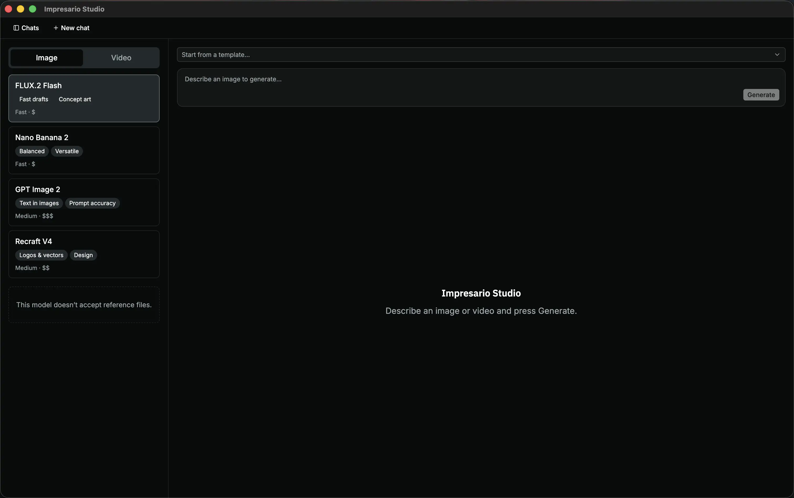
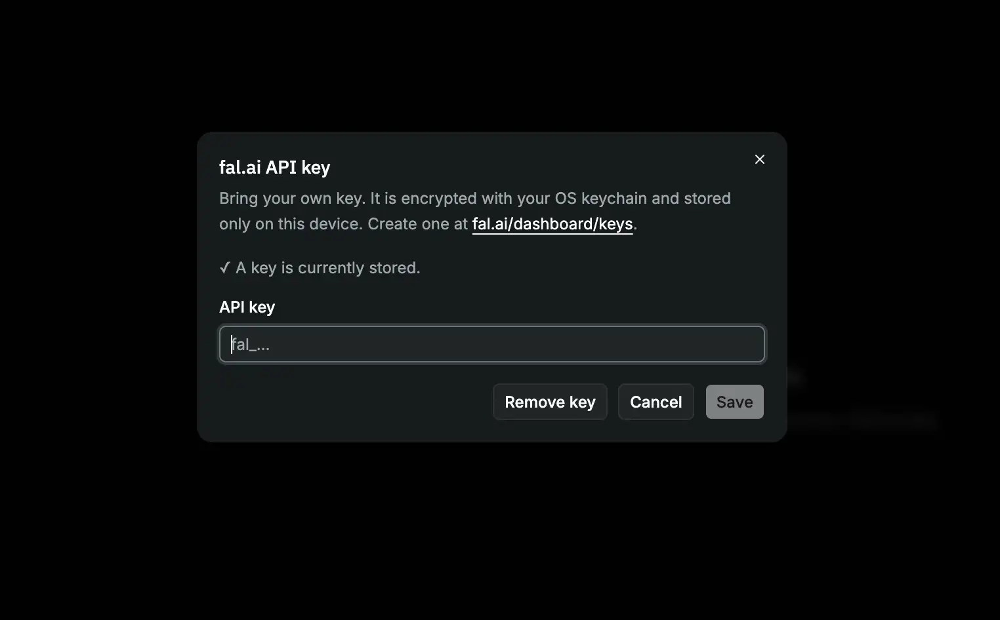

You can refine your idea over several messages, keep different projects in separate conversations, and revisit everything you've made later. Your work stays on your device — the app only talks to the AI service when you ask it to generate something, and you use your own account to do so.

What you can do
- Generate images and video from a description. Type what you want to see and the app creates it. Switch between Image and Video at the top of the model list.
- Have a conversation. Keep refining in follow-up messages — ask for changes, variations, or a different style.
- Organize your work. Each idea lives in its own conversation, which you can rename or delete from the Chats sidebar.
- Choose a model. Pick from the model list on the left — each shows what it's good at along with its speed and rough cost.
- Use reference images. Attach your own images to guide a generation (for models that support it).
- Save templates. Store prompts you use often and start from them with one click.
- View full-size. Click any result to open it large.
Before you start
Impresario Studio uses fal.ai to generate images and video, and you bring your own key — that means you sign up with fal.ai and the app uses your account. To get set up:
- Create a free account at fal.ai.
- Copy an API key from fal.ai/dashboard/keys.
- Open the app, click Settings (⚙), and paste your key.
Your key is encrypted with your operating system's keychain and stored only on this device — it's never shared with anyone but fal.ai.

How to use it
- Start a conversation — the app opens ready for a new one.
- Describe what you want in the text box at the bottom (for example, "a watercolor fox sitting in a snowy forest").
- (Optional) Pick a model, attach a reference image, or start from a template.
- Press Generate and wait a few moments for your image to appear.
- Keep going — send another message to refine the result, or start a new conversation in the sidebar for a different idea.
- Click an image to view it full-size.